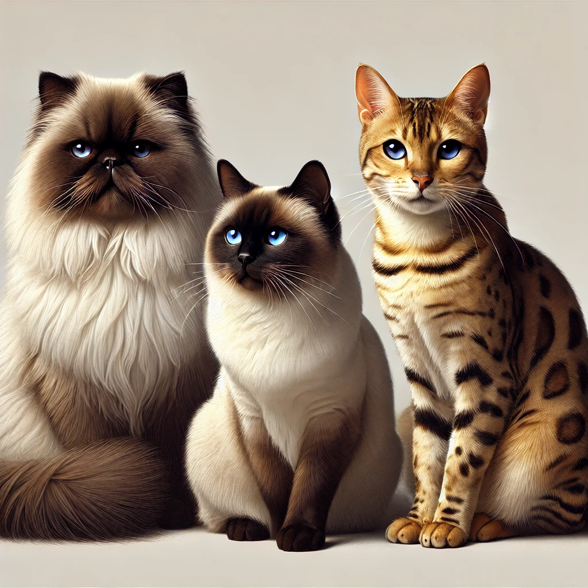
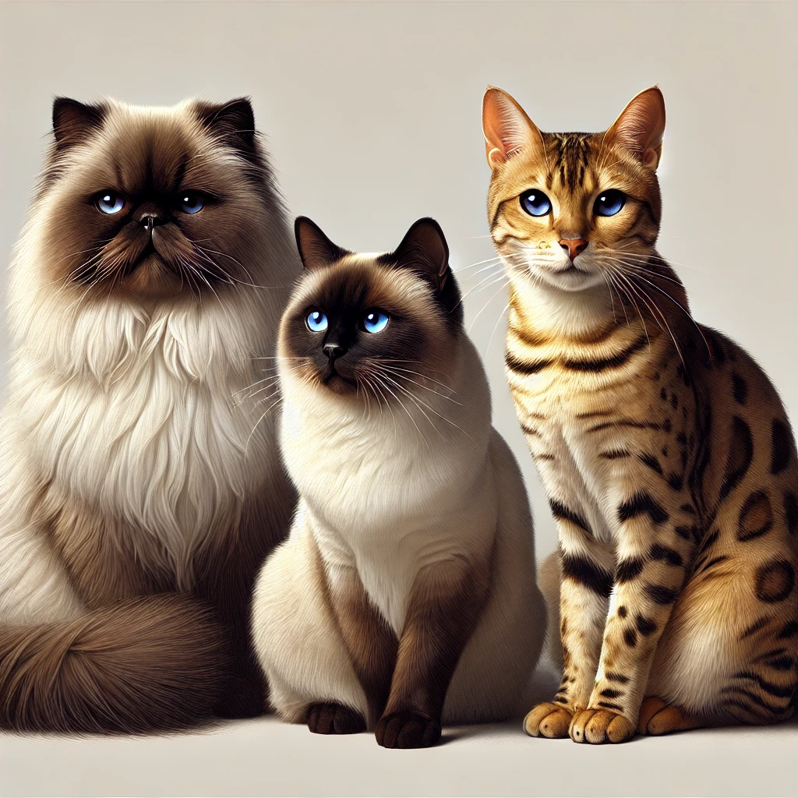

Ласкаво просимо!
Тут ви знайдете коротку інформацію про найпопулярніші породи: персидські, сіамські та бенгальські коти.
Коти – одні з найулюбленіших домашніх тварин у всьому світі. Вони можуть бути спокійними, грайливими та дуже харизматичними.
Тут ви знайдете коротку інформацію про найпопулярніші породи: персидські, сіамські та бенгальські коти.
Коти – одні з найулюбленіших домашніх тварин у всьому світі. Вони можуть бути спокійними, грайливими та дуже харизматичними.